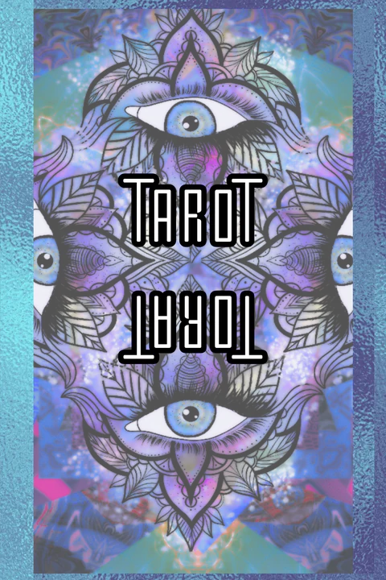
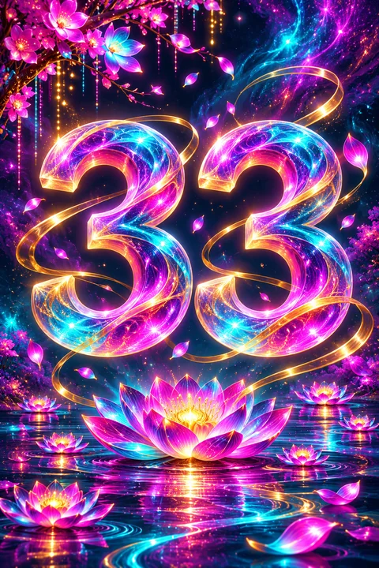

Read the symbols
Tarot Guide Book
A companion for learning card meanings, asking better questions, and building a thoughtful reading practice.
$19.99 CAD
Explore the book →Destiny / Expression / From the completed guide
Compassion communicated through teaching and creativity

Expression 33/6 combines the caring responsibility associated with 6 with a stronger emphasis on encouragement, teaching, and creative communication. You may recognize this symbolic theme in explaining something with patience, helping another person develop confidence, or making work that brings warmth and understanding to a shared concern. Bender particularly stresses the expressive qualities of the doubled 3; Numerology.com emphasizes guidance and communication. Decoz's description remains closely connected to the everyday care and artistic interests of the 6 root.
The difficulty is turning an ideal of generous service into an obligation to be endlessly available. You may feel pressure to have an answer, overlook your own creative needs, or become overly involved in decisions that belong to someone else. The sources differ in how strongly they separate 33 from 6. Decoz additionally proposes an age-related awakening, but that prediction is not adopted here. No special event or exceptional level of service is required to make this interpretation meaningful.
A constructive approach is to offer what you can sustain, say clearly where your knowledge ends, and let teaching include listening. Choose forms of service and creativity that leave room for your own development. The practical foundation is the 6 root: care expressed through respectful, reliable action. Compassion can be influential without making you responsible for another person's whole life.
The final paragraph is constructive editorial synthesis, not a separate source claim or prediction.
This reading is copied from the completed Destiny / Expression guide, page 15. The final paragraph is constructive editorial synthesis. It is not a new forecast or a claim about your abilities or future.
Open this page in the PDF →Keep exploring this position
A little wonder, in your hands
Learn with the guide. Read with the deck. Find your own way in.
Prices in Canadian dollars · Secure Stripe checkout available for ready products.

Read the symbols
A companion for learning card meanings, asking better questions, and building a thoughtful reading practice.
$19.99 CAD
Explore the book →
Make it your ritual
Explore the full 78-card Major and Minor Arcana through Crystal Eye’s vivid cyberpunk artwork.
$39.99 CAD
Explore the deck →
Save $9.99 together
Bring the guide and deck together: a place to learn, a deck to practice with, and a ritual to make your own.
$49.99 CAD
Explore the bundle →